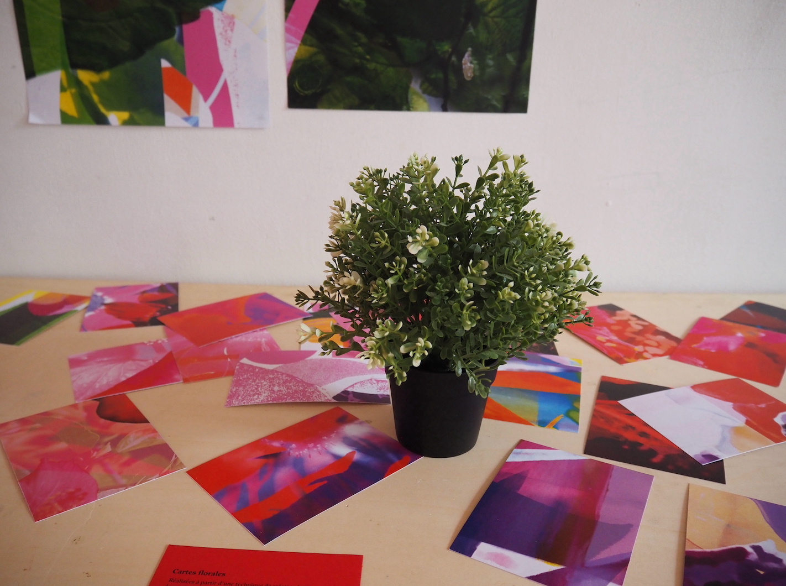
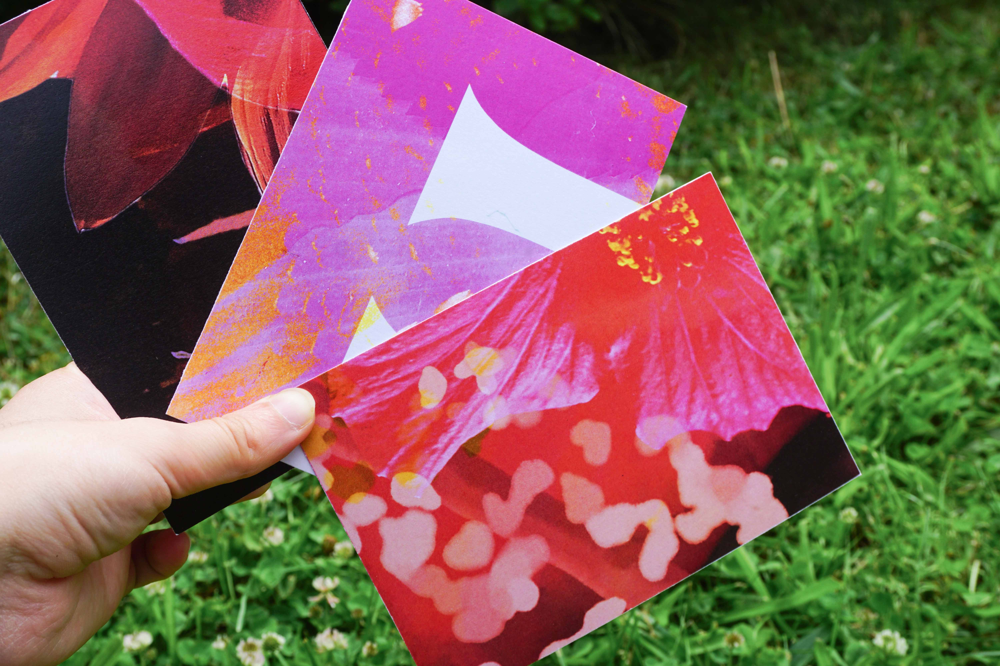
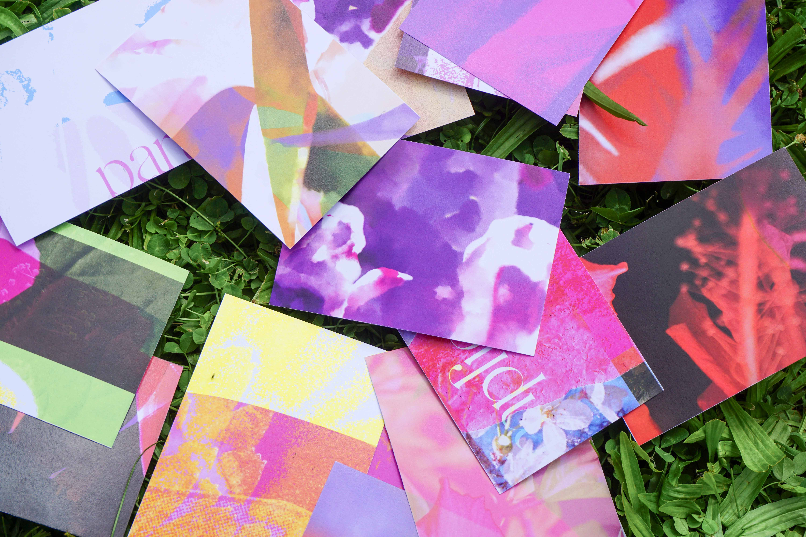

À partir d’une technique de création fondée sur la sortie du cadre et le changement d’échelle, ces images constituent ma base de données pour les affiches de la Maison de la Culture. Dans ces divers recadrages se mêlent photographies, formes graphiques, collages et illustrations personelles.
Imprimé en juin 2023
Affiches: 42 x 29,7 cm
Cartes postales: 14,8 x 10,5 cm